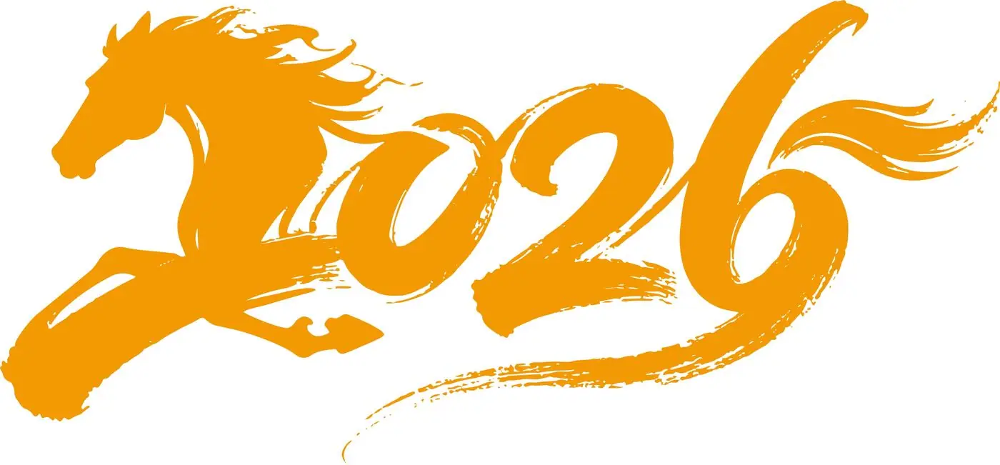
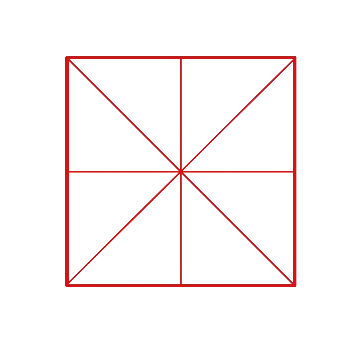
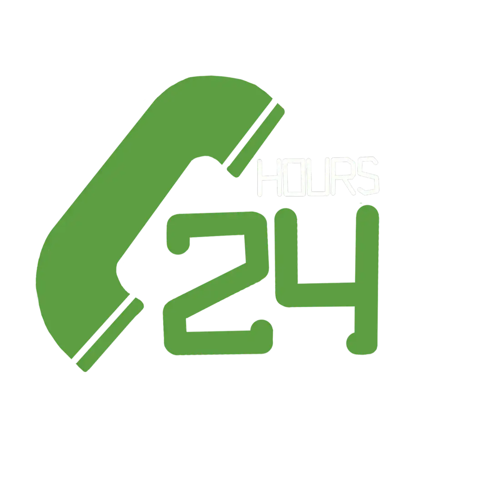
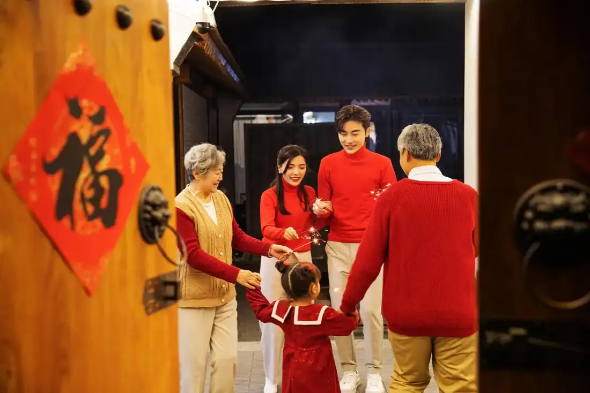
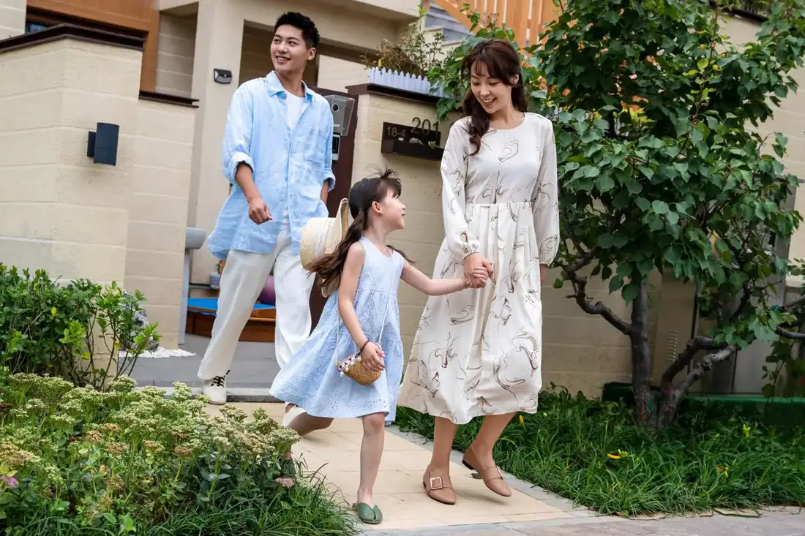

Giáo trình HSK 1 · Lesson 15大兴机场见！
Dàxīng Jīchǎng jiàn!
Hẹn gặp ở sân bay Đại Hưng!
Mục tiêu bài khóa
Sau bài học, người học có thể vận dụng các mẫu câu trọng tâm trong giao tiếp cơ bản.
旅行意愿与计划Diễn đạt ý định và kế hoạch du lịch.
“……，还/也……”Kết nối các ý song song bằng 还 hoặc 也.
待客与出行Giao tiếp khi tiếp khách và sắp xếp chuyến đi.
Khởi động · 热身
Lựa chọn hình ảnh tương ứng với 6 từ ngữ như trong PowerPoint.
💡 Hãy chọn một từ trước.
Từ vựng · 生词
Mặt trước có từ, pinyin, nghĩa, loại từ và nút phát–dừng. Mặt sau có hình ảnh và ví dụ theo PowerPoint.
爱
ài
thích; yêu thích
động từChạm vùng trống để lật thẻ
你爱看什么电影？ 🔊nǐ ài kàn shén me diàn yǐng ？
Bạn thích xem phim gì? 哪个
nǎge
cái nào
đại từChạm vùng trống để lật thẻ
你想买哪个？ 🔊nǐ xiǎng mǎi nǎ ge ？
Bạn muốn mua cái nào? 去年
qùnián
năm ngoái
danh từChạm vùng trống để lật thẻ
去年我还在上中学。 🔊qù nián wǒ hái zài shàng zhōng xué 。
Năm ngoái tôi vẫn học trung học. 男朋友
nánpéngyou
bạn trai
danh từChạm vùng trống để lật thẻ
她的男朋友是医生。 🔊tā de nán péng yǒu shì yī shēng 。
Bạn trai cô ấy là bác sĩ. 几
jǐ
vài; mấy
số từChạm vùng trống để lật thẻ
我想买几本书。 🔊wǒ xiǎng mǎi jǐ běn shū 。
Tôi muốn mua vài quyển sách. 年
nián
năm
danh từChạm vùng trống để lật thẻ

他学习中文两年了。 🔊tā xué xí zhōng wén liǎng nián le 。
Anh ấy học tiếng Trung hai năm rồi. 好玩儿
hǎowánr
vui; thú vị
tính từChạm vùng trống để lật thẻ
北京好玩儿吗？ 🔊běi jīng hǎo wán ér ma ？
Bắc Kinh có thú vị không? 西安
Xī’ān
Tây An
danh từ riêngChạm vùng trống để lật thẻ
去年我和男朋友去了西安。 🔊qù nián wǒ hé nán péng yǒu qù le xī ān 。
Năm ngoái tôi và bạn trai đã đến Tây An. 北京
Běijīng
Bắc Kinh
danh từ riêngChạm vùng trống để lật thẻ
今年我想去北京。 🔊jīn nián wǒ xiǎng qù běi jīng 。
Năm nay tôi muốn đến Bắc Kinh. 飞机
fēijī
máy bay
danh từChạm vùng trống để lật thẻ
我们坐飞机去北京。 🔊wǒ men zuò fēi jī qù běi jīng 。
Chúng ta đi máy bay đến Bắc Kinh. 要
yào
cần; mất thời gian
động từChạm vùng trống để lật thẻ

去北京要九个小时。 🔊qù běi jīng yào jiǔ gè xiǎo shí 。
Đến Bắc Kinh mất chín giờ. 小时
xiǎoshí
giờ; tiếng đồng hồ
danh từChạm vùng trống để lật thẻ

我今天上了四个小时的课。 🔊wǒ jīn tiān shàng le sì gè xiǎo shí de kè 。
Hôm nay tôi học bốn tiếng. 家人
jiārén
người nhà; gia đình
danh từChạm vùng trống để lật thẻ

我爱我的家人。 🔊wǒ ài wǒ de jiā rén 。
Tôi yêu gia đình mình. 时间
shíjiān
thời gian
danh từChạm vùng trống để lật thẻ
我现在没有时间。 🔊wǒ xiàn zài méi yǒu shí jiān 。
Bây giờ tôi không có thời gian. 机场
jīchǎng
sân bay
danh từChạm vùng trống để lật thẻ
明天我要去机场。 🔊míng tiān wǒ yào qù jī chǎng 。
Ngày mai tôi phải đến sân bay. 接
jiē
đón; tiếp đón
động từChạm vùng trống để lật thẻ
妈妈来学校接我。 🔊mā mā lái xué xiào jiē wǒ 。
Mẹ đến trường đón tôi. 住
zhù
ở; cư trú
động từChạm vùng trống để lật thẻ

你们可以住我家。 🔊nǐ men kě yǐ zhù wǒ jiā 。
Các bạn có thể ở nhà tôi. 早
zǎo
sớm
tính từChạm vùng trống để lật thẻ
我们早点儿去机场吧。 🔊wǒ men zǎo diǎn ér qù jī chǎng ba 。
Chúng ta đến sân bay sớm một chút nhé. 那
nà
vậy thì
liên từChạm vùng trống để lật thẻ
那我们在机场见。 🔊nà wǒ men zài jī chǎng jiàn 。
Vậy thì chúng ta gặp ở sân bay. 大兴机场
Dàxīng Jīchǎng
sân bay Đại Hưng
danh từ riêngChạm vùng trống để lật thẻ
我们星期日早上八点到大兴机场。 🔊wǒ men xīng qī rì zǎo shàng bā diǎn dào dà xīng jī chǎng 。
Chủ nhật chúng tôi đến sân bay Đại Hưng lúc tám giờ sáng. Bài khóa · 课文
Ảnh ngữ cảnh, nội dung và âm thanh gốc được lấy theo đúng từng bài khóa trong PowerPoint.
Tương tác đóng vai
Chọn bài khóa và nhân vật. Lời của vai đã chọn sẽ được ẩn; phần luyện tập chỉ hiển thị chữ Hán.
Củng cố từ vựng
Lật đáp án từ vựng rồi hoàn thành câu hỏi đọc hiểu.
Câu hỏi đọc hiểu
Mẫu câu cần nhớ: 我爱吃中国菜，也喜欢做。今年我也想去北京。大兴机场见！